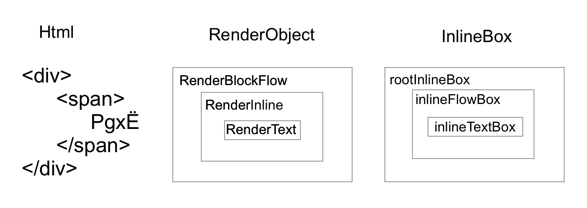
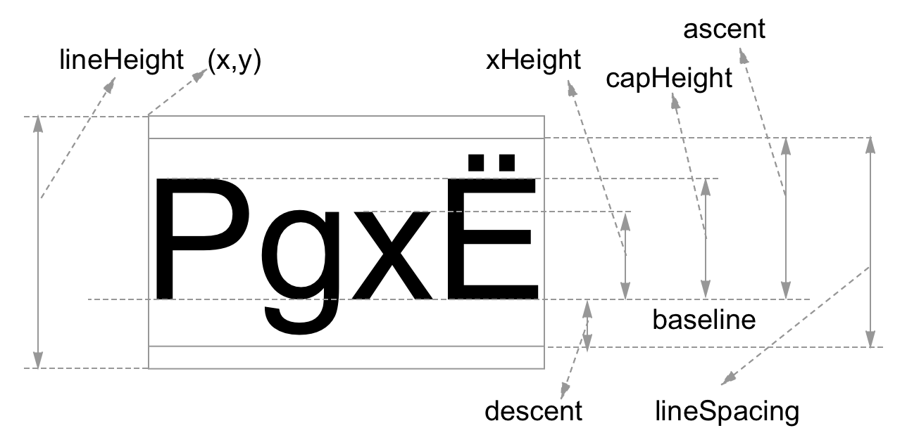
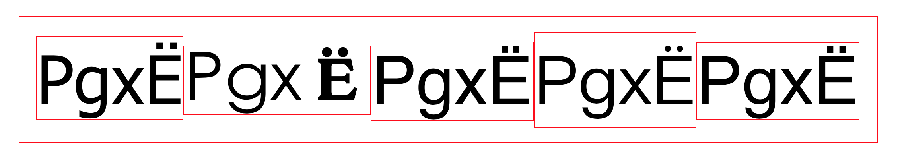
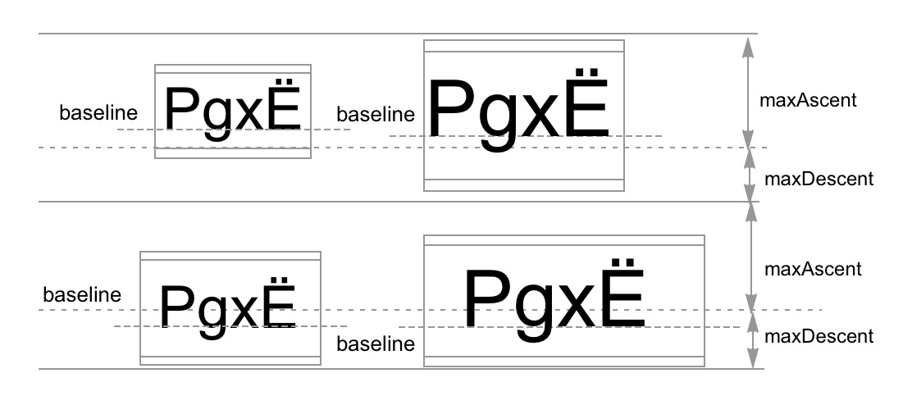

行内元素垂直方向layout终极揭秘
本文主要研究 inlineElement 在垂直方向的layout过程。
只探究单层嵌套，不考虑anoymousElement，不考虑overflow情况，不考虑outOfFlow情况。

inlineElement的layout过程主要为了确定span和span中字符的left，top，width，height的值，即inlineFlowBox和inlineTextBox的left，top，width，height的值。
对于LTR的布局，父元素blockElement在包含子元素inlineElement的时候，layout以行为单位，首先进行水平方向的布局，再进行垂直方向的布局。
水平方向以inlineFlowBox为单位，累计计算每个字符的宽度，判断换行位置，确定当前行所能容纳的字符的inlineFlowBox，确定每个inlineFlowBox的left值, 水平方向left计算除font本身外，还受margin，border，padding，word-wrap，word-break，white-space，word-spacing，hanging-punctuation影响；
垂直方向主要确定每行各个inlineFlowBox在rootInlineBox中的top值，inlineFlowBox通过vertical-align值，确定各自的top值，inlineFlowBox的top值受border，padding影响，不受margin影响，inlineTextBox不受margin，border，padding影响。
inlineTextBox介绍
inlineElement在layout的时候会生成inlineFlowBox，对于内部的字符，会生成inlineTextBox, 对于非anoymousElement，设置border就可以看到inlineElement的inlineFlowBox的长和宽。
字符的各项参数glaph metrics:

- ascent: inlineTextBox的上部分，字符最高处与ascent顶端可能有空白，由font-family决定
- descent: inlineTextBox的下部分，字符最低处与descent底端可能有空白，由font-family决定
- baseline: 分隔ascent和descent，字符底端沿baseline排列，如图中的P，x，E(为俄文字符)
- xHeight: 小写字符x的高度，由font-family决定
- capHeight: 大些字符P的高度，由font-family决定
- lineSpacing: lineGap + ascent + descent + adjustment，本文测试了很多情况，lineGap 都为0， adjustment 是在ios平台对于特殊字体的一个调整，所以本文暂且认为lineSpacing = ascent + descent
- lineHeight：默认等于lineSpacing，受line-height设置影响，如果设置line-height，lineHeight等于line-height，lineHeight与lineSpacing之间会上下相等的空隙 (lineHeight-lineSpacing) / 2;
ascent, descent, xHeight, capHeight为font自生属性，与font-family有关，设置相同line-height和font-size，对于不同的font-family，ascent，descent，xHeight，capHeight值都不同：

ascent，descent，lineHeight，xHeight，capHeight虽然与font-family有关，但是对于不同的系统平台，对于某些font-family，ascent，descent，lineHeight，xHeight，capHeight的值会特殊处理。
垂直方向的layout

垂直方向的layout以行为单位，确定inlineFlowBox和inlineTextBox的top值，对于rootInineBox每行会有一条类似inlineTextBox的baseline的线，该行的高度由该线的上端maxAscent和下端maxDecent组成，maxAscent和maxDecent由当前行内的inlineTextBox决定。
vertical-height的属性
inlineTextBox的top有以下10个值:
- baseline
- middle
- sub
- super
- text-top
- text-bottom
- top
- bottom
- baseline_middle
- length(数值|百分比)
设置inlineFlowBox的logicalTop
logicalTop是layout过程中设置的中间值，layout过程会持续设置logicalTop的值，直到layout结束，最终的logicalTop即为top值，对于不同的vertical-align值，inlineFlowBox的logicalTop初始值为：
- baseline: 0
- middle: -rootInlineBox的xHeight / 2 - lineHeight / 2 + baselinePosition
- sub: +rootInlineBox的fontSize / 5 + 1
- super: -rootInlineBox的fontSize / 3 + 1
- text-top: +baselinePosition - rootInlineBox的ascent
- top: 0
- bottom: 0
- text-bottom: 对于replaceElement: +rootInlineBox的descent；对于noreplaceElement: +rootInlineBox + descent - lineHeight + baselinePosition
- baseline_middle: -lineHeight / 2 + baselinePosition
- length: 数值：-value；百分比：-lineHeight * value
其中baselinePosition = ascent + (lineHeight - lineSpaceing) / 2
rootInlineBox的maxAscent和maxDescent的确定
- 当inlineFlowBox的vertical-align为top ，rootInlineBox的maxPositionTop = ascent + descent
- 当inlineFlowBox的vertical-align为bottom, rootInlineBox的maxPositionBottom = ascent + descent
- 当inlineFlowBox的vertical-align为其他情况，maxAscent = max(ascent - LogicalTop, ascent - LogicalTop, …)，maxDescent = max(descent + LogicalTop, descent + LogicalTop, …)
如果 maxAscent + maxDecent < max(maxPositionTop, maxPositionBottom)，调整maxAscent和maxDescent
- 如果inlineFlowBox的vertical-align为top，maxAscent + maxAscent < lineHeight，maxDescent = lineHeight- maxAscent
- 如果inlineFlowBox的vertical-align为bottom，maxAscent + maxAscent < lineHeight，maxAscent = lineHeight- maxDescent
如果遍历inlineFlowBox满足maxAscent + maxAscent >= max(maxPositionTop, maxPositionBottom),退出调整，则rootInlineBox的maxHeight = maxAscent + maxDecent
确定inlineFlowBox的top值
在当前layout过程，父元素rootInlineBox的logicalHeight = broderTop + paddingTop，在整个文档layout的文章中会介绍；再次计算inlineFlowBox的logicalTop值，进而确定inlineTexBox的logicalTop值。
- 当inlineFlowBox的vertical-align为top，logicalTop = rootInlineBox的logicalHeight
- 当inlineFlowBox的vertical-align为bottom ，logicalTop = rootInlineBox的logicalHeight + rootInlineBox的maxHeight - lineHeight
- 当inlineFlowBox的vertical-align 为其他情况，logicalTop += rootInlineBox的logicalTop + rootInlineBox的maxAscent - baselinePosition
最终logicalTop += baselinePosition - ascent - borderTop - paddingTop。
确定inlineTextBox的top值
设置inlineTextBox的logicalTop，logicalTop = inlineFlowBox的logicalTop + inlineFlowBox的(paddingTop + borderTop)
设置rootLineBox的logicalHeight
logicalHeight += maxAscent + maxDecent，当前行layout结束，继续下一行layout。
参考文档:
- https://developer.mozilla.org/en-US/docs/Web/CSS/Replaced_element
- https://stackoverflow.com/questions/41336177/font-size-vs-line-height-vs-actual-height
- https://stackoverflow.com/questions/3654321/measuring-text-height-to-be-drawn-on-canvas-android/42091739#42091739
- https://stackoverflow.com/questions/27631736/meaning-of-top-ascent-baseline-descent-bottom-and-leading-in-androids-font
- https://docs.microsoft.com/en-us/dotnet/framework/winforms/advanced/how-to-obtain-font-metrics
- https://github.com/soulwire/FontMetrics
- https://soulwire.github.io/FontMetrics/
- https://typedecon.com/blogs/type-glossary
如果你觉得阅读本文有收获，请给我打赏，谢谢